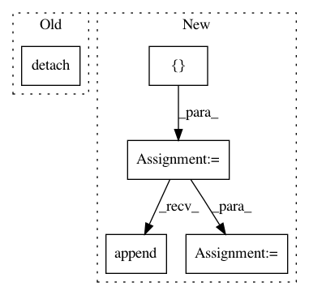

79d0265a90a7ee0847807dc299983aaef9e875a5,se3cnn/batchnorm.py,SE3BatchNorm,forward,#SE3BatchNorm#Any#,40
Before Change
if d == 1: // scalars
if self.training:
field_mean = field.mean(0).mean(-1).view(-1) // [feature]
self.running_mean[irm: irm + m] = (1 - self.momentum) * self.running_mean[irm: irm + m] + self.momentum * field_mean.detach()
else:
field_mean = self.running_mean[irm: irm + m]
irm += m
field = field - field_mean.view(1, m, 1, 1) // [batch, feature, repr, x * y * z]
After Change
"""
new_means = []
new_vars = []
fields = []
ix = 0
irm = 0
irv = 0
iw = 0
ib = 0
for m, d in self.Rs:
field = input[:, ix: ix + m * d] // [batch, feature * repr, x, y, z]
ix += m * d
field = field.contiguous().view(input.size(0), m, d, -1) // [batch, feature, repr, x * y * z]
if d == 1: // scalars
if self.training:
field_mean = field.mean(0).mean(-1).view(-1).detach() // [feature]
new_means.append(self._roll_avg(self.running_mean[irm:irm+m], field_mean))
else:
field_mean = self.running_mean[irm: irm + m]
irm += m
field = field - field_mean.view(1, m, 1, 1) // [batch, feature, repr, x * y * z]
if self.training:
field_norm = torch.sum(field ** 2, dim=2) // [batch, feature, x * y * z]
if self.reduce == "mean":
field_norm = field_norm.mean(-1) // [batch, feature]
elif self.reduce == "max":
field_norm = field_norm.max(-1)[0] // [batch, feature]
else:
raise ValueError("Invalid reduce option")
field_norm = field_norm.mean(0).detach() // [feature]
new_vars.append(self._roll_avg(self.running_var[irv: irv+m], field_norm))
else:
field_norm = self.running_var[irv: irv + m]
irv += m
field_norm = (field_norm + self.eps).pow(-0.5).view(1, m, 1, 1) // [batch, feature, repr, x * y * z]
if self.affine:
weight = self.weight[iw: iw + m] // [feature]
iw += m
field_norm = field_norm * weight.view(1, m, 1, 1) // [batch, feature, repr, x * y * z]
field = field * field_norm // [batch, feature, repr, x * y * z]
if self.affine and d == 1: // scalars
bias = self.bias[ib: ib + m] // [feature]
ib += m
field += bias.view(1, m, 1, 1) // [batch, feature, repr, x * y * z]
fields.append(field.view(input.size(0), m * d, *input.size()[2:]))
assert ix == input.size(1)
if self.training:
assert irm == self.running_mean.numel()
assert irv == self.running_var.size(0)
if self.affine:
assert iw == self.weight.size(0)
assert ib == self.bias.numel()
self.running_mean = torch.cat(new_means)
self.running_var = torch.cat(new_vars)
return torch.cat(fields, dim=1) // [batch, stacked feature, x, y, z]
In pattern: SUPERPATTERN
Frequency: 3
Non-data size: 5
Instances
Project Name: mariogeiger/se3cnn
Commit Name: 79d0265a90a7ee0847807dc299983aaef9e875a5
Time: 2018-10-16
Author: michal.tyszkiewicz@gmail.com
File Name: se3cnn/batchnorm.py
Class Name: SE3BatchNorm
Method Name: forward
Project Name: pytorch/pytorch
Commit Name: a0cf5566d88533c5caa7a490beb6eb0760eee9b4
Time: 2021-01-21
Author: wanchaol@users.noreply.github.com
File Name: torch/optim/sgd.py
Class Name: SGD
Method Name: step
Project Name: IBM/adversarial-robustness-toolbox
Commit Name: e21ef336207b0f9ae378c77430d298945827830a
Time: 2019-02-12
Author: M.N.Tran@ibm.com
File Name: art/classifiers/pytorch.py
Class Name: PyTorchClassifier
Method Name: get_activations